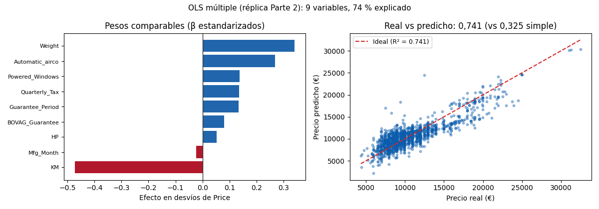

Unidad 6 · Regresión lineal simple y múltiple · Lección 0024
Regresión múltiple: la fórmula de 9 variables
Win de hoy: replicar la Parte 2 del análisis de ejemplo: OLS con 9 variables (R² 0,741, AIC 25.692, condición 2,3e+06), leyendo cada coeficiente ceteris paribus.
1 · De una variable a nueve (ceteris paribus)
La regresión múltiple
suma variables a la fórmula: Price = base + β₁·KM + β₂·Weight + … OLS elige los 10 números
(9 + base) que minimizan los errores al cuadrado en los 1436 autos. Cada coeficiente se lee
ceteris paribus
(“todo lo demás igual”): β_KM = −0,0456 dice que 10.000 km extra restan ~456 € a igual peso, potencia y
equipamiento. En la simple (0003) era −0,055: la múltiple reparte el mérito.
2 · La selección del reference (lista basura)
Antes de ajustar, el reference filtra: solo numéricas, fuera Id, constantes
(Cylinders), rarezas (cc, Doors) y —ojo— tanto
Age_08_04 como Mfg_Year (la duplicada y su gemela: el modelo final no usa ni edad
ni año). Quedan 9: mes, KM, HP, impuesto, peso, garantía BOVAG, período, aire y vidrios. Detalles honestos: la lista
trae "Cilynders" con typo (inocuo: el filtro if c in df lo ignora) y fillna(mean)
no rellena nada (no hay huecos, 0004).
y = df_limpio["Price"]; X = df_limpio.drop(columns=["Price"]) # 9 vars
modelo = sm.OLS(y, sm.add_constant(X)).fit()
print(modelo.summary()) # R² 0,741 · AIC 25692 · BIC 25745 · cond 2,31e+063 · Leer el summary (el boletín)
- R² 0,741 (ajustado 0,740): 74 % explicado vs 32,5 % de la simple. El 26 % restante: estado, color de moda, apuro del vendedor.
- Coeficientes: KM −0,0456, peso/potencia positivos. Los β estandarizados (figura) los hacen comparables: peso manda, mes pesa poco.
- P>|t|: ≈ 0 en KM/peso/aire (efectos sólidos);
Mfg_Month0,087 = dudoso (¿el mes fabrica precio? probablemente ruido estacional, 0002). - Condición 2,3e+06: multicolinealidad residual (0019): aun podando, quedan redundancias (peso↔potencia↔impuesto). Por eso existe U5. En el extremo, la redundancia perfecta vuelve singular a la matriz (determinante cero, no invertible): OLS no encuentra coeficientes únicos y todo se loteriza (0019).
4 · Figura: pesos y ajuste

Regenerar la figura (mismo resultado versionado en assets/img/toyota/):
python scripts/make_figures.py --only regresion-multiple-ols5 · Quiz (auto-chequeo inmediato)
6 · Fuente primaria y cierre
Para profundizar (1 fuente):
Documentación de statsmodels — OLS y summary()
(statsmodels.org, también en
RESOURCES.md del curso).
¿Algo no quedó claro? Preguntame al agente: leer tu propio summary, qué es ceteris paribus en tu variable, o por qué condición enorme pide U5. Esa pregunta vale más que releer.